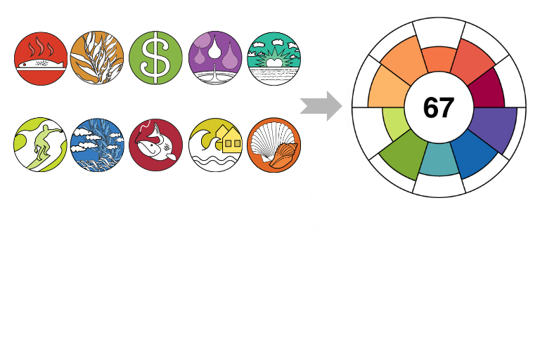

#shinydevcon 2016-01-30
Ocean Health Index
OHI Assessments

OHI+ Baltic

Next Steps for OHI Shiny Dev
Add source layers, eg 1km raster shipping (leaflet::addRaster, tileOptions)

Embed interactive flower plot on map rollover


Thank You!
Huge thanks to the developers of:
- Shiny
- RStudio
- "Hadley-verse" of packages
Please visit us at: ohi-science.org
Backup Slides
…